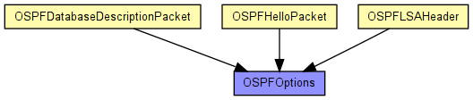
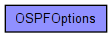

should be a byte long bitfield
The following diagram shows usage relationships between types. Unresolved types are missing from the diagram. Click here to see the full picture.
The following diagram shows inheritance relationships for this type. Unresolved types are missing from the diagram. Click here to see the full picture.
| Name | Type | Description |
|---|---|---|
| DC_DemandCircuits | bool | |
| E_ExternalRoutingCapability | bool | |
| EA_ForwardExternalLSAs | bool | |
| NP_Type7LSA | bool | |
| unused_2 | bool | |
| unused_1 | bool | |
| MC_MulticastForwarding | bool | |
| unused_3 | bool |
// should be a byte long bitfield struct OSPFOptions { bool unused_1; bool E_ExternalRoutingCapability; bool MC_MulticastForwarding; bool NP_Type7LSA; bool EA_ForwardExternalLSAs; bool DC_DemandCircuits; bool unused_2; bool unused_3; }